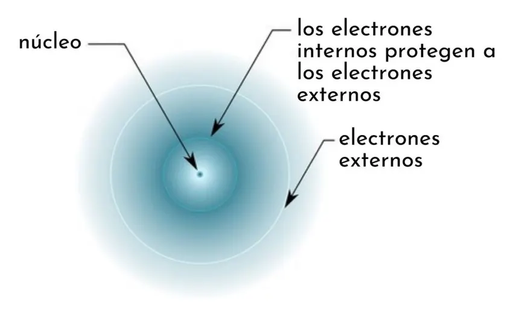
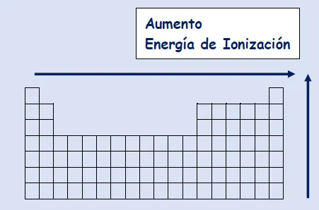

2.1: Características de la clasificación periódica moderna de los elementos
Para comprender los criterios de clasificación de los elementos químicos, tomarás en cuenta el número atómico, los electrones de valencia y el número de órbitas o niveles energéticos. Con ellos analizarás la organización de la tabla periódica en grupos y periodos.
En las tablas periódicas podemos ver la organización en períodos y grupos. Los periodos son las filas horizontales y están numeradas del 1 al 7, En estas filas se agrupan los elementos que tienen el número de capas de electrones que coincide con el número del período.
Los grupos o familias en la tabla periódica son las columnas verticales, en cada grupo existen elementos con propiedades similares entre ellos las cuales cambian a lo largo de los períodos. Los grupos se enumeran del uno hasta el 18 o del 1A hasta el 8A para los elementos representativos (corresponden a los grupos 1, 2, 13, 14, 15, 16, 17 y 18), en esta enumeración se excluyen a los grupos del 3 al 12 que corresponde a los elementos de transición. Los elementos que pertenecen a una misma columna tienen características químicas similares, a partir de cómo se estructuran los electrones en la última capa del átomo.
Metales
En general todos los elementos metálicos comparten una serie de propiedades similares. La mayor parte de ellos son sólidos (excepto el mercurio) y brillantes, también son dúctiles, es decir, se les puede dar la forma de alambres, también son maleables, o sea que podemos hacer hojas planas de ellos.
No metales
Los no metales tienen propiedades opuestas a los metales, no tienen brillo, no son dúctiles son maleables, tampoco son buenos conductores de electricidad o calor, poseen puntos de fusión bajos. Algunos de ellos son gaseosos a temperatura ambiente como el oxígeno y el hidrógeno, los elementos del grupo 8A también conocidos como gases nobles.
Metaloides
Los no metales tienen propiedades opuestas a los metales, no tienen brillo, no son dúctiles son maleables, tampoco son buenos conductores de electricidad o calor, poseen puntos de fusión bajos. Algunos de ellos son gaseosos a temperatura ambiente como el oxígeno y el hidrógeno, los elementos del grupo 8A también conocidos como gases nobles.
Grupos
Los elementos químicos se organizan en grupos de la siguiente manera:- Grupo 1 (I A): metales alcalinos.
- Grupo 2 (II A): metales alcalinotérreos.
- Grupo 3 (III B): familia del escandio.
- Grupo 4 (IV B): familia del titanio.
- Grupo 5 (V B): familia del vanadio.
- Grupo 6 (VI B): familia del cromo.
- Grupo 7 (VII B): familia del manganeso.
- Grupo 8 (VIII B): familia del hierro.
- Grupo 9 (VIII B): familia del cobalto.
- Grupo 10 (VIII B): familia del níquel.
- Grupo 11 (I B): familia del cobre.
- Grupo 12 (II B): familia del zinc.
- Grupo 13 (III A): térreos.
- Grupo 14 (IV A): carbonoideos.
- Grupo 15 (V A): nitrogenoideos.
- Grupo 16 (VI A): calcógenos o anfígenos.
- Grupo 17 (VII A): halógenos.
- Grupo 18 (VIII A): gases nobles.
Bloques
La tabla periódica también se puede dividir en cuatro bloques según la secuencia de
capas de electrones de cada elemento. El nombre de cada bloque deriva según el
orbital en el que se ubica el último electrón.
- Bloque s: grupos 1 y 2 de los metales alcalinos, alcalinotérreos, hidrógeno y
helio.
- Bloque p: abarca los grupos del 13 al 18 y metaloides.
- Bloque d: compuesta por los grupos del 3 al 12 y los metales de transición.
- Bloque f: no tiene número de grupo y corresponde a los lantánidos y actínidos.
Generalmente, se colocan debajo de la tabla periódica
Tendencias de la tabla periódica
Las tendencias periódicas se refieren a las principales propiedades físicas y químicas que poseen los elementos y que permiten su organización en la tabla periódica.Entre las tendencias periódicas se encuentran
- Radio atómico: es la distancia que hay entre el número del átomo y su orbital más
externo, lo que permite calcular el tamaño del átomo. Aumenta de derecha a izquierda
en los períodos, así como de arriba hacia abajo en los grupos.
- Afinidad electrónica: se describe como la energía que libera un átomo cuando se le
agrega un electrón o viceversa. Aumenta en los períodos de izquierda a derecha, y en
los grupos aumenta hacia arriba.
- Electrones de valencia: se refiere a los electrones que se encuentran en la capa
más externa del átomo. Aumentan a medida que los elementos se ubican de izquierda
a derecha, y se establecen a partir del grupo de la tabla periódica al que pertenece el
elemento.
- Energía de ionización: energía necesaria para separar un electrón del átomo. En un
período esta energía aumenta hacia la derecha, y en un grupo aumenta hacia arriba.
- Electronegatividad: capacidad de un átomo para atraer electrones hacia sí mismo.
Aumenta de izquierda a derecha a lo largo de un período.
- Metales: las propiedades de los metales son mayores a medida que los elementos se
ubican en la parte inferior izquierda de la tabla.
- No metales: las propiedades de los no metales aumentan a medida que los
elementos se encuentran en la parte superior derecha de la tabla.
2.1.1: Tabla periódica larga y tabla cuántica.
Tabla Periódica larga.
La tabla periódica usada actualmente y constituida por siete filas y dieciocho columnas, se conoce como tabla periódica larga y proviene de Alfred Werner y Friedrich Adolf Paneth. La tabla periódica larga incluye todos los elementos encontrados en la naturaleza y los obtenidos artificialmente (118).Tabla periódica cuántica
La tabla cuántica, es una clasificación de los elementos basada en la periodicidad de sus propiedades químicas, como consecuencia y función de la distribución electrónica obtenida de los valores de los números cuánticos. La tabla cuántica permite encontrar fácilmente los números cuánticos de los electrones en la capa más externa del átomo. La tabla cuántica tiene una disposición escalonada, diseñada según las reglas de llenado. Por ello hay que seguir los escalones para obtener el número cuántico principal, salvo en el caso de las excepciones como la plata, en el ejemplo de la sección anterior.2.2: Propiedades atómicas y su variación periódica.
Las posiciones que ocupan horizontal y verticalmente (períodos y grupos) permiten exhibir ciertas tendencias predecibles en dichas propiedades, lo anterior hace de la tabla periódica una herramienta muy útil en el estudio de la química.
Radio Atómico.
Corresponden a un medio de la longitud entre los núcleos de dos moléculas vecinas.- Esta dimensión es muy importante para las propiedades como los puntos de fusión y ebullición, así como la densidad de los elementos químicos.
- La variación del radio atómico es que para los períodos aumenta y para los grupos disminuye.
Radio iónico.
Es la propiedad de los iones (cationes y aniones) semejante al radio atómico pero afectada por la pérdida o ganancia de electrones. Se puede estimar por el método de difracción de rayos x.Potencial de ionización.
Es la energía que se requiere para retirar un electrón de un átomo gaseoso en su estado fundamental.- Esta propiedad la presentan los metales cuando son polivalentes tienen primera, segunda, tercera etc., energía de ionización.
- Estos valores son constantes determinados a nivel experimental y se encuentran tabuladas para distintos elementos.
Afinidad electrónica.
Es la propiedad de la energía liberada cuando un átomo en estado gaseoso recibe un electrónico y como consecuencia forma un anión.- Se presenta en átomos que tienen facilidad para aceptar o ganar electrones.
- Los valores de esta energía se obtienen con relativa dificultad experimentalmente debido a la inestabilidad que tienen los aniones.
= Las tendencias muestran que la afinidad electrónica aumenta en un mismo período cuando se avanza hacia la derecha en un mismo período. y para un mismo grupo de descenso hacia abajo de la tabla periódica.
Electronegatividad.
Es la propiedad periódica por la que un átomo manifiesta su capacidad para atraer hacia sí los electrones de un enlace químico.- Sólo se puede medir su valor con respecto a la de otros elementos. Pauling desarrolló un método para medir las electronegatividades relativas de los elementos químicos.
2.2.1: Carga nuclear efectiva.
Es la carga real que mantiene a un electrón unido al núcleo, es decir, la carga positiva que ‘siente’ un electrón dado, en función de su entorno electrostático. Para un electrón situado en un nivel externo, Z* es siempre menor que la carga nuclear. Existen dos contribuciones al entorno electrostático de cada electrón: una componente atractiva, que consiste en la carga nuclear formal (Z), y una repulsiva, conformada por la contribución del resto de electrones, denominada apantallamiento o efecto pantalla (a). Se denomina así porque ‘apantalla’ o suaviza el efecto de la carga nuclear.
2.2.2: Radio atómico, Radio covalente, Radio iónico.
Radio atómico. carece de sentido estricto en el ámbito de la mecánica cuántica
" La función de distribución radial disminuye gradualmente al aumentar la distancia al
núcleo (!"0, cuando r"#). La función de onda tiende asintóticamente a cero ".
“No es posible determinar el radio atómico en átomos aislados”
" No hay límites precisos para el átomo”.
Radio covalente. Se define como la mitad de la distancia internuclear.
" Los datos de radios atómicos se refieren a enlaces sencillos (ni dobles ni triples)”.
" Se conocen valores de radio covalente razonablemente buenos de casi todos los
elementos químicos”
Radio covalente. Se define como la mitad de la distancia internuclear.
" Los datos de radios atómicos se refieren a enlaces sencillos (ni dobles ni triples)”.
" Se conocen valores de radio covalente razonablemente buenos de casi todos los
elementos químicos”
2.2.3: Energía de ionización.
¿Qué es?
Las fuerzas electroestáticas que se dan entre los electrones y los protones de un átomo son las responsables de varias de sus propiedades químicas y físicas. A su vez, los electrones de valencia son los responsables de las interacciones entre dos o más átomos, por lo que resulta importante conocer cómo es la interacción electroestática entre el núcleo y los electrones de valencia. La energía de ionización es un parámetro que nos ayuda a medir esta interacción.La energía de ionización es la energía requerida para eliminar un electrón de un átomo específico. Se mide en kJ/mol, que es una unidad de energía, al igual que las calorías. Las energías de ionización asociadas a algunos elementos se describen en la siguiente tabla. Para cualquier átomo dado, los electrones de valencia más externos tendrán energías de ionización más bajas que los electrones del núcleo de la capa interna. A medida que se agregan más electrones alrededor de un núcleo, los electrones externos quedan protegidos del núcleo por los electrones de la capa interna. A esto se le llama blindaje electrónico. 
2.2.4: Afinidad electrónica.
La afinidad electrónica es otra propiedad periódica que nos da información sobre el
comportamiento químico de los elementos. Sin embargo, a diferencia del radio atómico
y la energía de ionización, esta propiedad de los elementos químicos no tiene un
comportamiento regular a lo largo de la tabla periódica, ya que depende de muchos
factores. Aun así, se alcanza a observar una cierta tendencia generalizada.
El cambio de energía que se produce cuando un átomo neutro gana un electrón se
llama su afinidad electrónica. Cuando se libera energía en una reacción o proceso
químico, esa energía se expresa como un número negativo.
- La afinidad electrónica es una medida de la energía liberada cuando se agrega un
electrón extra a un átomo.
- Las afinidades de los electrones se miden en estado gaseoso.
- En general, las afinidades electrónicas se vuelven más negativas a medida que
avanzamos de izquierda a derecha en la tabla periódica.
- En general, las afinidades electrónicas se vuelven menos negativas de arriba a abajo
de un grupo.
2.2.5: Numero de oxidación.
Un número de oxidación es un número positivo o negativo que se asigna a un átomo
para indicar su grado de oxidación o reducción. El término estado de oxidación a
menudo se usa indistintamente con el número de oxidación. Una transferencia parcial
de electrones es un desplazamiento en la densidad electrónica cerca de un átomo
como resultado de un cambio en los otros átomos a los que está unido covalentemente.
Ese desplazamiento de carga se basa en las electronegatividades relativas de los
átomos involucrados en el enlace.
Contar el número de electrones transferidos es una forma ineficiente y lenta de
determinar los estados de oxidación. Estas reglas proporcionan un método más simple:
- El estado de oxidación de un elemento no combinado es cero. Esto se aplica
independientemente de la estructura del elemento: Xe, Cl 2, S 8, y las grandes
estructuras de carbono o silicio tienen cada una un estado de oxidación de cero.
- La suma de los estados de oxidación de todos los átomos o iones en un compuesto
neutro es cero.
- La suma de los estados de oxidación de todos los átomos en un ion es igual a la
carga en el ion.
- Al elemento más electronegativo en una sustancia se le asigna un estado de
oxidación negativo. Al elemento menos electronegativo se le asigna un estado de
oxidación positiva.
2.2.6: Electronegatividad.
La electronegatividad de un elemento es definida como la capacidad relativa de un
átomo para atraer electrones de otro átomo para enlazarse químicamente y formar un
compuesto.
Los elementos más electronegativos poseen mayor capacidad para atraer electrones,
por lo tanto, tienden a formar aniones con facilidad; en cambio los elementos menos
electronegativos, también llamados electropositivos, tienden a perder electrones de
valencia transformándose en cationes.
En la tabla periódica la electronegatividad aumenta de izquierda a derecha, de abajo
hacia arriba y no incluye a los gases nobles porque éstos no poseen tendencia a perder
o ganar electrones.
2.3: Aplicación. Impacto económico o ambiental de algunos elementos.
Los elementos químicos normalmente no se hallan libres en la naturaleza, si no que más bien, bajo la forma de combinaciones. Entre los que se encuentran libres podemos citar: El oxígeno, azufre, carbono, gases raros del aire y otros pocos más. La mayor parte de ellos tienen que obtenerse de sus compuestos, y estos se encuentran en la naturaleza al estado de mezclas más o menos complejas.

2.3.1: Abundancia de los elementos en la naturaleza.
Los elementos se distribuyen de forma desigual en la Tierra. Algunos elementos, como
el O y Si, son los constituyentes mayoritarios de la mayor parte de los minerales; otros,
como el He o Au son escasos.
Se observa que existe un gran rango de abundancia de los elementos que se expande
en 10 potencias de 10, entre los más comunes (O, Si) y los menos abundantes (Os, Te,
Xe).
En la naturaleza existe una variedad infinita de objetos e infinita también es la variedad
de formas, colores y estados. A pesar de sus propiedades dispares, esta multitud de
objetos está compuesta por alrededor de 90 elementos básicos, desde el hidrógeno al
uranio. En la mayoría de los casos en su composición solo entran algunos de estos
elementos.
Esta rica diversidad de materiales de la naturaleza se debe a la relativa abundancia de
elementos y a la manera en que se combinan. Por una parte, observamos que existen
materiales puros y extremadamente sencillos, tales como el diamante, formado
exclusivamente por átomos de carbono, mientras que, por otra, nos encontramos con
rocas sumamente complejas en cuya composición entran casi todos los elementos,
desde el hidrógeno al uranio.
2.3.2: Elementos de importancia económica.
Hoy en día la industria química es un importante sector industrial presente en la
mayoría de países, que dinamiza el crecimiento económico, genera empleo y ofrece
diversidad de productos, no obstante, produce contaminación al medio ambiente y
utiliza recursos naturales no renovables.
Algunos de los elementos de importancia económica son:
- Oro: México es un importante productor de oro.
- Cobre: México es un importante productor de cobre.
- Plomo: México es un importante productor de plomo.
- Carbón: México es un importante productor de carbón.
- Hierro: México es un importante productor de hierro.
- Azufre: México es un importante productor de azufre.
2.3.3: Elementos contaminantes.
Los elementos contaminantes son sustancias que pueden ser químicas, biológicas o
emergentes.
Las sustancias contaminantes pueden agruparse en distintas categorías según sus
afecciones tanto al medio ambiente como a la salud
Gases de efecto invernadero (GEI)
Los gases de efecto invernadero son aquellos gases constituyentes de la atmósfera, tanto de origen natural como antropogénico, que tienden a retener parte de la energía en forma de calor que irradia la superficie de la Tierra. Esto provoca el calentamiento de la parte baja de la atmósfera, principal causa del cambio climático.Según el Protocolo de Kyoto (anexo A) los gases de origen humano son los siguientes:
- Dióxido de carbono (CO2)
- Metano (CH4)
- Óxido nitroso (N2O)
- Hidrofluorocarburos (HFC)
- Perfluorocarbonos (PFC)
- Hexafluoruro de azufre (SF6)
Metales pesados
Es un grupo de elementos químicos constituyentes generalmente naturales de la corteza terrestre que presentan propiedades metálicas. Están asociados a la contaminación y a la potencial toxicidad y ecotoxicidad.Entre los mismos se encuentran (Real Decreto 653/2003, de 30 de marzo, sobre incineración de residuos):
- Arsénico y sus compuestos (As)
- Cadmio y sus compuestos (Cd)
- Cromo y sus compuestos (Cr)
- Cobre y sus compuestos (Cu)
- Mercurio y sus compuestos (Hg)
- Níquel y sus compuestos (Ni)
- Plomo y sus compuestos (Pb)
- Zinc y sus compuestos (Zn)
- Talio (Tl)
- Antimonio (Sb)
- Cobalto (Co)
- Manganeso (Mn)
- Vanadio (V)
Compuestos orgánicos persistentes (COP)
Los compuestos orgánicos persistentes (COP; POPs en inglés) son sustancias químicas persistentes en el medio ambiente, bioacumulables, altamente tóxicas y con potencial para transportarse a larga distancia, lo cual supone una amenaza para el medio ambiente y la salud humana.El Convenio de Estocolmo es el instrumento internacional más importante cuyo objetivo es regular y controlar los COP. A nivel de la Unión Europea se aprobó el Reglamento (UE) 2019/1021 del Parlamento Europeo y del Consejo de 20 de junio de 2019 sobre contaminantes orgánicos persistentes.
- Aldrina
- Clordano
- Dieldrina
- Endrina
- Heptacloro
- Hexaclorobenceno
- Mirex
- Toxafeno
- PCB
Sustancias que agotan la capa de ozono.
Entre las sustancias antropogénicas que provocan una disminución de la concentración de ozono en las capas medias de la atmósfera (estratosfera), generando efectos sumamente dañinos por su efecto oxidante para la vida en la tierra, se encuentran los siguientes hidrocarburos halogenados producidos por el hombre:- CFC
- HCFC
- Halones
- Tetraclorometano
Pesticidas
Los pesticidas son sustancias y productos destinados es influir en los procesos fundamentales de organismos vivos. Se utilizan para eliminar y controlar los organismos nocivos tales como malezas o insectos vectores de enfermedades. Algunos pesticidas pueden contribuir a mejorar el rendimiento agrícola asegurando que los alimentos de buena calidad estén disponibles a precios razonables.- Alaclor
- Aldrina
- Atrazina
- Clordano
- Clordecona
- Clorfenvinfós
- Clorpirifós
- Diurón
- Endosulfán
- Endrina
- Heptacloro
- Hexaclorociclohexano (HCH)
- Alaclor
- Aldrina
- Atrazina
- Clordano
- Clordecona
- Clorfenvinfós
- Clorpirifós
- Diurón
- Endosulfán
- Endrina
- Heptacloro
- Hexaclorociclohexano (HCH)
Otras sustancias
Otras sustancias no incluidas en ninguno de los grupos anteriores son las siguientes:- Monóxido de carbono (CO)
- Óxidos de azufre (SOx)
- Nitrógeno total (N)
- Fósforo total (P)
- Cloroalcanos (C10-C13)
- Dicloroetano 1,2 (DCE)
- Diclorometano (DCM)